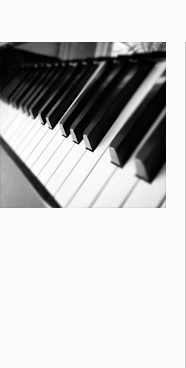

Initiation au piano
Les cours privés d’initiation au piano s’adressent aux enfants de 5 et 6 ans. Au moyen de jeux musicaux, les élèves développent leur sens du rythme et leur oreille mélodique. Ils explorent l’harmonie et apprivoisent la technique instrumentale. Au programme : chansons, percussions, improvisation et courtes pièces de piano pour petites mains !
Bienvenue à tous !